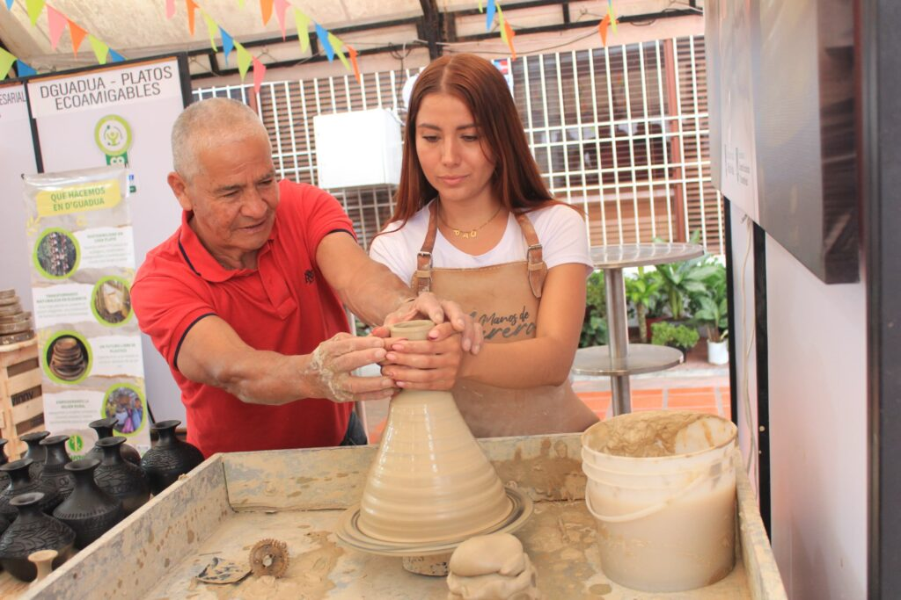
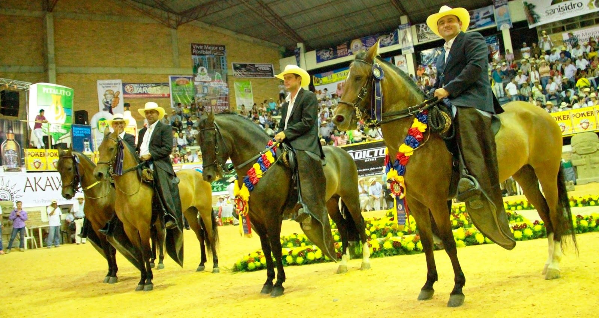
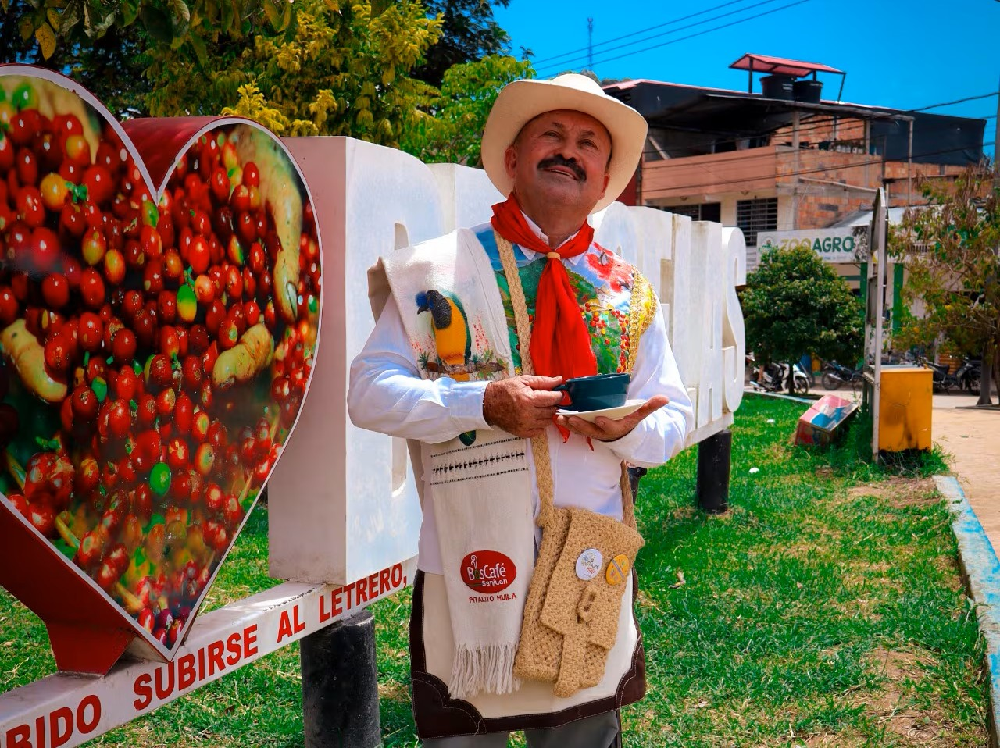

Descubre tradiciones, historia y patrimonio cultural de Pitalito.Sumérgete en sus costumbres, festividades, expresiones artísticas y arquitectura representativa que reflejan la identidad y el legado de su gente. Vive experiencias culturales auténticas mientras recorres espacios llenos de memoria, color y significado que conectan el pasado con el presente de la región.

Pitalito es famoso por su alfarería y cerámica, con experiencias directas como "Manos de Alfarero".

Competencias de los mejores ejemplares del Caballo Criollo Colombiano, juzgamientos de alto nivel, remates musicales y muestras gastronómicas.

Pitalito es líder en producción de café especial, ofreciendo visitas a fincas tradicionales para conocer el proceso desde la siembra hasta la taza.